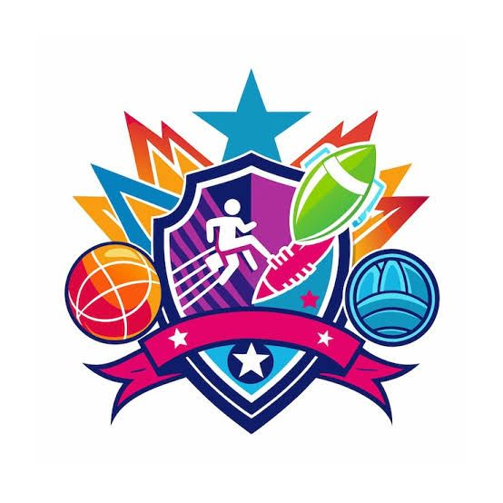

Com o início das etapas municipais e regionais dos Jogos Escolares em diferentes regiões do país, observa-se um deslocamento importante na dinâmica das escolas. A rotina se reorganiza em torno das competições, estudantes passam a ocupar novos lugares dentro dos grupos e determinadas relações ganham visibilidade. Ainda que frequentemente tratados como eventos pontuais no calendário escolar, os Jogos produzem efeitos que extrapolam a lógica da disputa esportiva.
Ao concentrar, em um curto período, interações intensas entre pares, os Jogos Escolares acabam por evidenciar aspectos que, no cotidiano, permanecem mais diluídos. Situações envolvendo reconhecimento entre colegas, formas de comunicação, disputas por espaço e modos de lidar com regras e frustrações tornam-se mais explícitas. Nesse sentido, o esporte escolar não apenas expressa relações sociais já existentes, mas também contribui para organizá-las e, em certa medida, redefini-las.
Esse caráter formativo não se dá apenas pelas propostas pedagógicas formalmente estruturadas, mas sobretudo pelas experiências vividas e pelas respostas que essas experiências recebem. A maneira como determinados episódios são absorvidos, ignorados ou elaborados no contexto das competições participa diretamente da construção de referências coletivas entre crianças e adolescentes. Aprende-se não apenas pelas regras do jogo, mas também pela forma como o ambiente responde ao que acontece dentro dele.
Entre adolescentes, fase marcada por uma forte orientação ao grupo e pela busca por pertencimento, esses processos assumem uma relevância ainda maior. O que é dito, o que é silenciado e o que é considerado aceitável tende a ser rapidamente incorporado como parâmetro de convivência. Nesse contexto, os Jogos Escolares funcionam como um espaço privilegiado de produção de normas sociais, ainda que isso não ocorra de maneira intencional ou planejada.
É nesse ponto que se abrem possibilidades importantes para a problematização de temas que atravessam o esporte escolar contemporâneo. Questões relacionadas à convivência, às formas de interação entre estudantes, às dinâmicas de inclusão e exclusão, bem como às desigualdades que se manifestam no acesso, na participação e no reconhecimento, tendem a emergir com maior nitidez durante esse período. Não se trata necessariamente de temas novos, mas de situações que, nos Jogos, se tornam mais difíceis de ignorar.
Ao mesmo tempo, a forma como essas questões circulam no ambiente esportivo escolar nem sempre favorece sua elaboração. Muitas vezes, são tratadas como aspectos secundários diante da centralidade atribuída ao desempenho e ao resultado. Outras vezes, permanecem no plano do não dito, diluídas em práticas consideradas parte “natural” do jogo. Esse movimento contribui para que determinadas experiências não sejam nomeadas ou discutidas, mesmo quando produzem efeitos significativos sobre os estudantes.
Nesse contexto, também se destacam iniciativas que articulam o ambiente escolar, a universidade e a gestão pública na condução dos Jogos. Em alguns estados, como no Paraná, esse movimento tem se materializado por meio de parcerias com as Secretarias Estaduais do esporte, envolvendo ações de acompanhamento, organização e coleta sistemática de dados durante as competições. A abertura desses espaços institucionais tem sido fundamental para a aproximação entre prática e produção de conhecimento, possibilitando que pesquisadores e profissionais se debrucem sobre as dinâmicas psicossociais do esporte escolar em situação real. Esses registros têm contribuído não apenas para o avanço de pesquisas na área, mas também para o aprimoramento de estratégias de intervenção mais qualificadas e sensíveis às demandas de crianças e adolescentes.
Nesse cenário, a psicologia do esporte ocupa um papel particularmente relevante, não como um elemento externo ao processo educativo, mas como um campo capaz de tensionar e ampliar a compreensão das experiências produzidas nos Jogos Escolares. Ao considerar o esporte como espaço de desenvolvimento humano, torna-se possível compreender que as vivências competitivas mobilizam dimensões emocionais, relacionais e identitárias que ultrapassam o desempenho esportivo em si.
Situações envolvendo pressão, medo do erro, frustração, pertencimento e reconhecimento aparecem de maneira recorrente no contexto competitivo escolar. A forma como crianças e adolescentes aprendem a lidar com essas experiências participa diretamente da construção de recursos emocionais importantes para além do ambiente esportivo. Nesse sentido, aspectos como autorregulação emocional, tolerância à frustração, manejo da ansiedade e percepção de competência passam a compor parte importante da experiência formativa proporcionada pelos Jogos.
Da mesma forma, o lugar que cada estudante ocupa dentro da prática esportiva interfere na construção de sua própria identidade. Ambientes excessivamente orientados pela lógica do rendimento tendem a reduzir o valor do participante à sua performance, reforçando dinâmicas de exclusão, comparação constante e reconhecimento condicionado ao resultado. Em contrapartida, contextos esportivos que favorecem escuta, acolhimento e participação ampliam as possibilidades de construção de vínculos mais saudáveis com o esporte, com o grupo e consigo mesmo.
As próprias relações sociais estabelecidas durante os Jogos também demandam mediação contínua. Valores frequentemente associados ao esporte não emergem automaticamente da prática esportiva, mas dependem das formas pelas quais as experiências são conduzidas, legitimadas e interpretadas pelos adultos envolvidos. Professores, treinadores e profissionais que atuam nesse contexto participam ativamente da construção dos sentidos atribuídos à competição, às vitórias, às derrotas e às relações entre os estudantes.
Por isso, torna-se fundamental reforçar o cuidado com o posicionamento dos responsáveis durante as competições, considerando que a forma como familiares e professores se comunicam, apoiam e reagem às vivências esportivas impacta diretamente a experiência dos jovens atletas. Incentivar um ambiente de acolhimento, respeito e incentivo condizente às necessidades de cada grupo também faz parte da promoção de um esporte mais seguro, educativo e alinhado ao desenvolvimento integral.
Além disso, se os Jogos Escolares frequentemente reproduzem aspectos mais amplos da organização social, eles também podem constituir um espaço potente de transformação dessas dinâmicas. Isso implica reconhecer que o ambiente esportivo escolar não é neutro: ele produz modos de convivência, regula comportamentos e contribui para consolidar determinadas formas de relação entre sujeitos e grupos.
Considerar os Jogos Escolares como dispositivo formativo, portanto, implica reconhecer que eles não apenas refletem o contexto social mais amplo, mas também participam ativamente da sua reprodução e transformação. O que se observa nesse espaço não é apenas uma manifestação do que já está dado, mas a construção contínua de modos de convivência que podem se consolidar para além do momento competitivo.
Mais do que introduzir novos conteúdos ou demandas, esse reconhecimento convida a um deslocamento de perspectiva: olhar para os Jogos não apenas como um evento a ser conduzido, mas como um contexto que produz sentidos, regula interações e contribui para a formação social de crianças e adolescentes. É nesse entrelaçamento entre prática esportiva, experiência emocional e construção social que reside uma parte significativa do seu potencial formativo.
Quer participar dessa discussão?
O Grupo de Trabalho (GT) “Psicologia do Esporte na Infância e Adolescência” da ABRAPESP reúne pesquisadoras(es), profissionais e estudantes interessados em compreender e qualificar as experiências de crianças e adolescentes no contexto esportivo. O GT se dedica à discussão de temas relacionados ao desenvolvimento, às relações sociais, aos processos formativos e às condições que atravessam a participação de jovens no esporte.Além de promover ações que estimule a produção científica e a divulgação de práticas em Psicologia do Esporte especificamente para crianças e adolescentes envolvidos com esporte.
Se você tem interesse em acompanhar ou participar das atividades do GT, entre em contato e venha fortalecer esse espaço de diálogo, reflexão e construção de práticas mais conscientes e sensíveis no esporte que crianças e adolescentes estejam envolvidos.
Sobre os autores:
Gustavo Baroni
Profissional de Educação Física (CREF: 036474/PR). Doutorando em Educação Física e graduando em Psicologia pela Universidade Estadual de Londrina. Membro da atual diretoria (2026–2027) da Associação Brasileira de Psicologia do Esporte.
Thais Moreira
Psicóloga Clínica Infantojuvenil e do Esporte(CRP0326179), Especialista em Clínica Analítico Comportamental Infantil: Práticas e Recursos Terapêuticos Baseados em ABA – CBI of Miami. Com formação em Psicologia do Esporte.Atual coordenadora do Grupo de Psicologia do Esporte, Exercício e Lazer da Bahia (Gpeel-BA) e Vice-Coordenadora do GT de Infância e Adolescência no Esporte da Associação Brasileira de Psicologia do Esporte.
Fabiana Nascimento
Pedagoga. Psicóloga Clínica e Esportiva. Pós-graduada em Psicologia Esportiva pela Universidade de Minas, CBF e CRP. Pós-graduação em TCC para alto rendimento esportivo, neurociência e psicopedagogia. Membro da atual diretoria (2026–2027) da Associação Brasileira de Psicologia do Esporte.